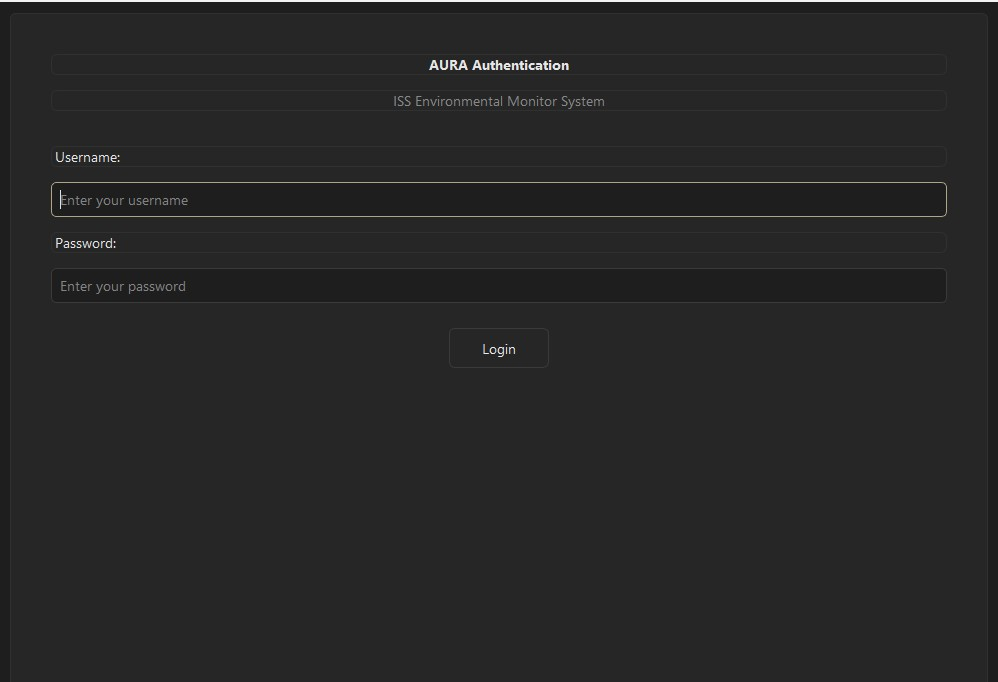
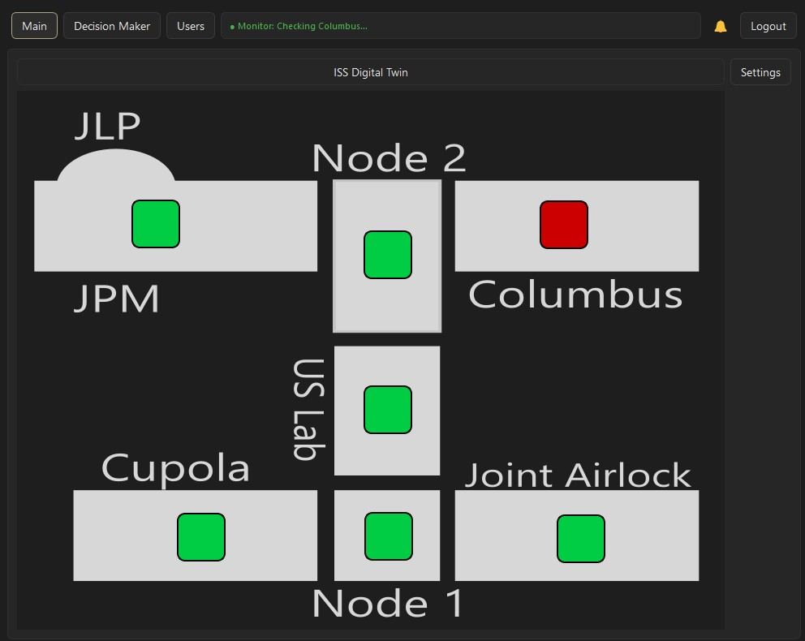
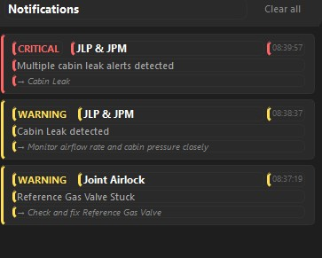
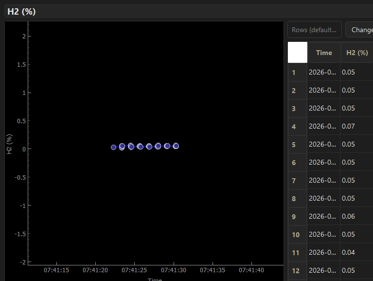
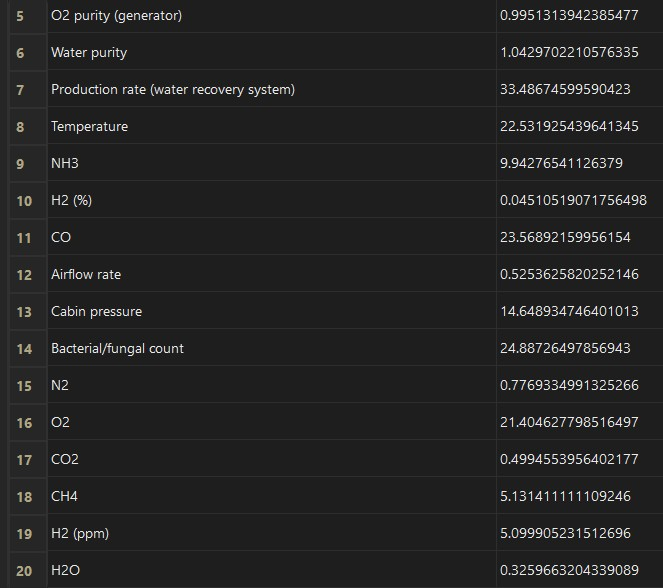
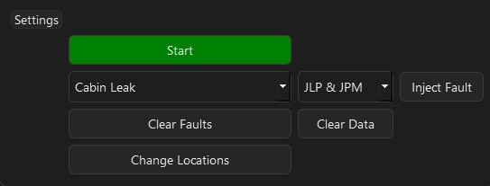

Testing & Validation
Rigorous testing across every layer of the A.U.R.A. system — from data generation to AI-driven decision-making
Login & Access Control
The application opens on a secure login screen with role-based access control. Three user roles — Administrator, Operator, and Analyst — each unlock different pages and capabilities. Authentication was verified for all three roles to confirm correct permission enforcement and that unauthorized page access is blocked.
Verified:
- ✓ Successful login and session handling for all three user roles
- ✓ Incorrect credentials are rejected cleanly with no crash
- ✓ Role-based page visibility enforced after login
- ✓ JSON-based credential storage confirmed secure


Digital Twin Dashboard
The Digital Twin page displays an SVG-based ISS spacecraft diagram with live, color-coded sensor indicators overlaid at each module location. Green indicators confirm nominal operation; red indicators flag active anomalies. Testing verified all 28 sensor positions render correctly across 7 ISS modules and that indicator colors update in real time as faults are injected and cleared.
Verified:
- ✓ All 28 sensor indicators render at correct positions on the ISS diagram
- ✓ Color changes from green → red upon fault injection, back to green on clearance
- ✓ Sensors are draggable and save their new positions to
locationData.json - ✓ Clicking a sensor opens the detail view for that location
- ✓ SVG background scales correctly across window sizes
Critical Alert Detection
When the Isolation Forest or Random Forest classifies incoming sensor data as anomalous, the system raises a critical alert. Testing confirmed that alerts fire correctly for each of the 8 supported fault types, that the alert UI clearly communicates the affected subsystem and location, and that no false alerts are raised during nominal operation.
Verified:
- ✓ Critical alerts triggered for all 8 fault types (Cabin Leak, O₂ Generator Failure, CO₂ Scrubber Failure, CHX Failure, Water Processor Failure, Trace Contaminant Filter Saturation, O₂ Leak, NH₃ Coolant Leak)
- ✓ Alert UI displays fault name, affected location, and severity
- ✓ No false alerts raised during 1,000 nominal test samples
- ✓ Alerts clear correctly once fault is resolved


Notifications — Critical & Warning Levels
A.U.R.A. uses a two-tier notification system: Critical alerts indicate an active fault requiring immediate action, while Warning alerts flag parameters drifting toward out-of-range values before a full fault develops. Testing validated both tiers fire at the correct thresholds and display clearly in the notification panel without overlap or missed alerts.
Verified:
- ✓ Critical notifications fire when Isolation Forest labels a reading as anomalous (−1)
- ✓ Warning notifications fire when parameter values drift outside nominal range but before reaching the critical threshold
- ✓ Both notification types display simultaneously without UI conflicts
- ✓ Notification panel scrolls correctly when multiple alerts are active
- ✓ Notifications dismiss after the fault clears
Data Graphing & Historical Trends
The graphing view renders live time-series plots for any selected sensor parameter, pulling from the rolling 10,000-row historical data queue. Testing confirmed graphs update in real time at a 1-second refresh rate, that fault-period spikes are clearly visible in the trend line, and that the axis labels and parameter names render correctly for all 20 monitored parameters.
Verified:
- ✓ Real-time graph updates at 1-second intervals across all 20 parameters
- ✓ Fault-injected anomalies appear as clear spikes or drops in the trend line
- ✓ Historical data queue retains up to 10,000 rows for long-duration trend analysis
- ✓ Axis labels, units, and parameter names render correctly
- ✓ Graphs handle rapid fault injection and clearance without visual glitches


Data Quick Look — Main Dashboard
The Main Dashboard provides an at-a-glance view of all 13 subsystems organized in a grid of live tables. Each table row shows the current sensor value alongside its parameter name, refreshing every second. Testing verified that all 20 parameters populate correctly, values round to 2 decimal places, and clicking any row navigates to the full detail view for that parameter.
Verified:
- ✓ All 13 subsystem tables render with correct parameter groupings
- ✓ Live values refresh every second with no stale data displayed
- ✓ Values rounded to 2 decimal places for readability
- ✓ Clicking a parameter row navigates correctly to the detail/graphing view
- ✓ Layout remains stable under continuous data refresh (no layout shifts)
Settings & Fault Injection Controls
The Settings panel gives operators and administrators the ability to start and stop data generation, inject any of the 8 supported fault types at a chosen ISS module location, clear active faults, and wipe stored data. Testing confirmed all controls function correctly and that injected faults are immediately reflected in live sensor readings and alert notifications.
Verified:
- ✓ Start/Stop data generation toggles the generator process and updates the button state
- ✓ Fault injection applies the selected fault to the correct ISS module only — no cross-location leakage
- ✓ All 8 fault types injectable from the dropdown and immediately detectable by the ML pipeline
- ✓ Clear Faults resets all active drifts and returns sensor readings to nominal
- ✓ Clear Data wipes the database cleanly with no application crash
- ✓ Sensor edit mode allows repositioning indicators on the digital twin with drag-and-drop

Isolation Forest — Anomaly Detection Testing
The Isolation Forest model is trained on 5,000 nominal sensor samples and evaluated on 1,000 freshly generated nominal samples to verify an acceptably low false-positive rate. The live fitness check requires ≥ 90% accuracy before the model is allowed to label production data.
Test Procedure (testIsolationForest.py):
- ✓ 1,000 nominal samples generated, scaled, and predicted — anomaly rate and score stats printed
- ✓ Feature means and standard deviations verified within expected bounds
- ✓ Model + scaler + parameter order saved together in a single
.joblibbundle
Live Fitness Testing (isolationForestWrapper.py):
- ✓ 300 synthetic mixed samples (90% nominal / 10% anomalous) generated on-the-fly
- ✓ Model must achieve ≥ 90% accuracy before labeling live data
- ✓ Fitness re-tested every 30 seconds during operation
Random Forest & Deep Q-Network Testing
The Random Forest classifier identifies which specific fault is occurring, trained on 5,000 samples per fault class with a stratified 75/25 split. The DQN then takes the augmented state (sensor values + IF anomaly score + RF probabilities) and selects the correct corrective action from 10 maintenance options.
Random Forest (trainRandomForest.py / test_randomForest.py):
- ✓ Classification report with precision, recall, and F1-score per fault class
- ✓ Fault onset detection: 200 nominal steps → fault injected → model confidence rises to match injected fault
- ✓ 300-estimator ensemble, full tree depth, stratified split
Deep Q-Network (trainAI.py / testAI.py):
- ✓ 1,000 training episodes, epsilon-greedy exploration (ε: 0.9 → 0.01), replay memory of 10,000
- ✓ Soft target network updates (τ = 0.005), Huber loss, gradient clipping at 100
- ✓ 1,000 test episodes — model selects correct action via
argmax(Q-values)with no exploration noise
Comprehensive Validation Summary
Every layer of the A.U.R.A. system has been independently tested and validated — from the physics-based data generation engine through three ML models to the full-stack desktop application. Our testing ensures that when deployed aboard the ISS, the system will reliably detect anomalies, correctly classify faults, and recommend the right corrective action to keep crews safe.
Tested. Validated. Mission-Ready.